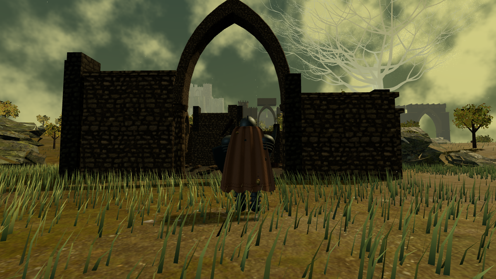
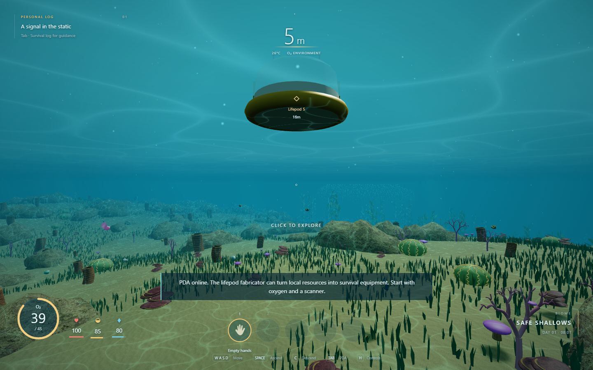
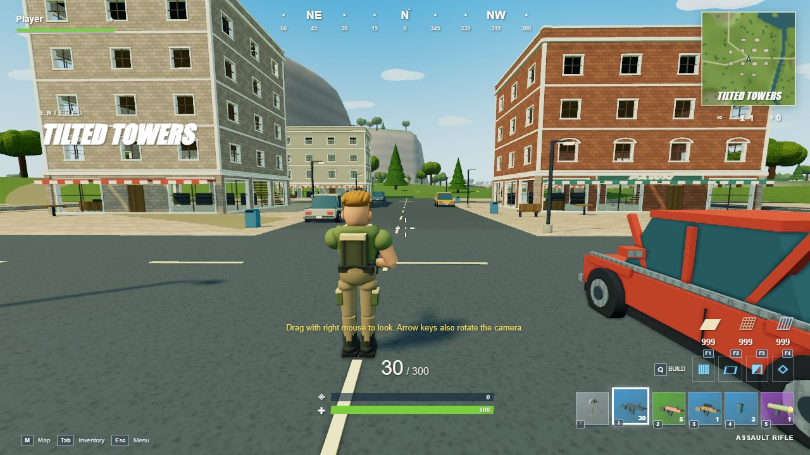

01 / THE LANDS BETWEENACTION ADVENTURE
Elden Ring
Explore Limgrave, face bosses, and follow the guidance of grace.
THE PLAYABLE BUILDS
Windows & macOS
Keyboard + mouse · Plays offline
Extract the entire ZIP. On Windows, double-click START GAMES.cmd. On Mac, double-click START GAMES.command. The game library opens automatically.
Keep the launcher window open while playing. No Node.js installation is needed.

01 / THE LANDS BETWEENACTION ADVENTURE
Explore Limgrave, face bosses, and follow the guidance of grace.

02 / PLANET 4546BUNDERWATER SURVIVAL
Dive into the crater. Gather, craft, build a base, and venture deeper.

03 / CHAPTER ONE